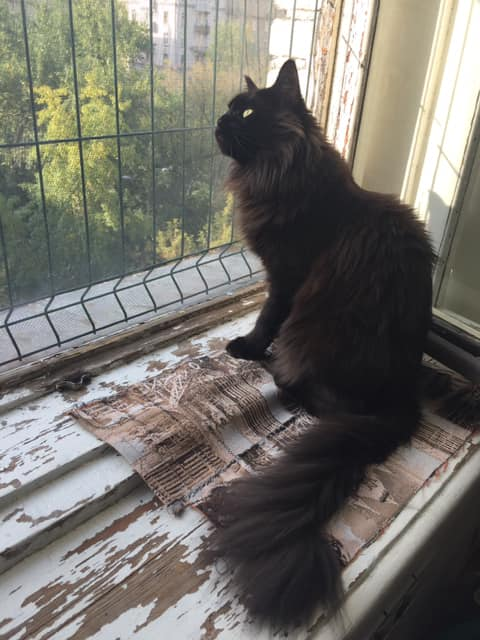

Мурррдромряк 1: Атними у двуногава тапку и валяйся с ним вабнимку! Двуногий начнет замирзать, наклоница за тапкай, ты ево и куснешь заруку! Патамушта занагу уже куснул! В этам заключатца двайной кайф. Пользуйтись на ваше кашачье здаровие! Мряк!
Мурррдромряк 2: Прасыпайтись параньши, успеити напасть на двуногава, пока он спит (двуногий спрячица пыдадеяла, но вы пряма на ём сыможити стынцавать пабедыную лизыгинку), запутать задыние лапы сибе нитками и вычислить каркающую пысицу. Мряк!